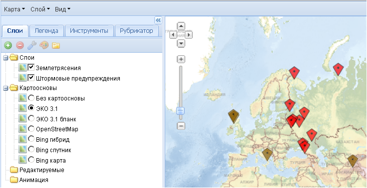
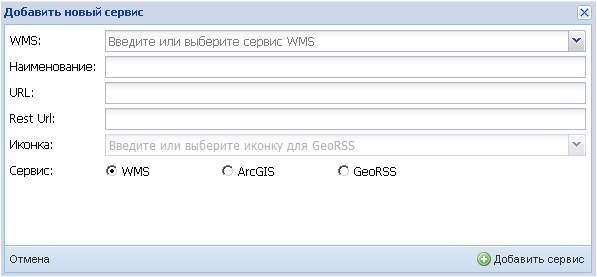
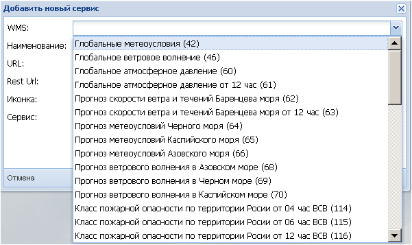
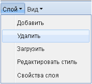

Слой
Команда Добавить меню Слой служит для:
1) управления составом тематических картографических слоев, которые накладываются поверх выбранной картографической основы,
2) добавления новых сервисов.

1). При использовании команды появляется дополнительное окно Доступные слои, в котором отображаются слои из сервисов, определенных администратором. Названия доступных сервисов перечислены в ниспадающем списке окошка Просматривать данные с:.
Из общего списка загруженных слоев конкретного сервиса пользователь может отобрать необходимые слои для отображения в рабочем окне карты, нажимая левой кнопкой мыши на названии слоя или нескольких слоев (с помощью клавиш Ctrl или Shift). Закончив выбор, необходимо нажать кнопку Добавить слои. Кнопка Готово закроет окно Доступные слои.

Выбранные слои отразятся в рабочем окне, а на боковой панели задач появится список этих слоев.

При выборе нужных слоев в окне Доступные слои можно получить краткую характеристику каждого слоя (метаданные). Для этого необходимо нажать на пиктограмму слева от названия слоя, и под этим названием выведется информационная справка.

В окне Доступные слои имеется возможность управлять выводом списка слоев. При наведении указателя мыши на название одного из полей оно подсвечивается цветом, и справа от названия поля появляется пиктограмма. Нажатие на нее открывает контекстное меню, с помощью которого можно отсортировать записи в поле по алфавиту от А до Я или от Я до А, а также настроить видимость необходимых полей. Сортировку записей возможно провести также, наведя курсор на название поля и нажав левую кнопку мыши. Записи отсортируются, и при этом появится пиктограмма, показывающая направление сортировки или . Повторные нажатия мышью меняют направление сортировки.
2). Если в списке сервисов, определенном администратором, нет нужных пользователю сервисов, их можно подгрузить с помощью кнопки Добавить сервис.

В появившемся окне Добавить новый сервис… можно выбрать какой-либо из типов сервисов: (а) WMS, (б) ArcGIS, или (в) слой GeoRSS, - отметив его галочкой в нижней строке Сервис:.

(а) Необходимый сервис типа WMS можно либо выбрать из ниспадающего списка, нажав пиктограмму ,
,

либо ввести известный пользователю URL-адрес нового сервиса. Одновременно с этим в строке Наименование: пользователь может ввести условное название подгружаемого сервиса для его идентификации в сеансе работы. Настройка сервиса для многократного использования описана в разделе Инструменты-Настройка сервисов.

После нажатия кнопки Добавить сервис приложение соединится с сервером и загрузит все слои выбранного сервиса в окно Доступные слои. Название сервиса добавится в список Просматривать данные с:.

Если пользователю необходимо иметь возможность подключить управляющие функции (изменение стиля слоя), то одновременно с вводом URL-адреса требуется ввести Rest URL-адрес.

(б) Необходимый сервис типа ArcGIS можно подгрузить, введя его URL-адрес в строке URL:. Одновременно с этим в строке Наименование: пользователь может ввести условное название подгружаемого сервиса для его идентификации в сеансе работы. Настройка сервиса для многократного использования описана в разделе Инструменты-Настройка сервисов.

После нажатия кнопки Добавить сервис приложение соединится с сервером и загрузит все слои выбранного сервиса в окно Доступные слои. Название сервиса добавится в список Просматривать данные с:.
(в) Специальный слой GeoRSS это слой сообщений, имеющих координатную привязку. Необходимый слой GeoRSS можно загрузить, зная его URL-адрес. Одновременно с этим в строке Наименование: нужно дать ему имя, а в строке Иконка: - выбрать из списка цвет условного знака, отмечающего местоположение сообщения.